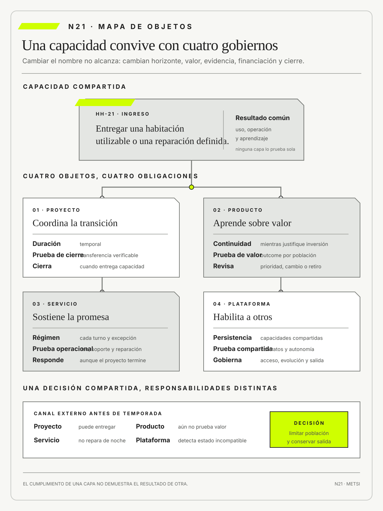

Steve Blank
The Startup Owner’s ManualWiley · 2020
Vinculó el desarrollo de propuestas de valor con aprendizaje sobre clientes, problemas y modelos sostenibles.

El sistema falla cuando el cumplimiento de una capa se usa como prueba del resultado de otra.
Proyecto, producto, servicio y plataforma
Ruta priorizada: 1 h 20 min a 1 h 40 min. Núcleo de lectura: 60 a 75 min; preparación: 20 a 25 min. Las extensiones agregan 30 a 45 min y profundizan el recorrido.

Nota. SIN NUM. identifica aparatos de orientación y referencia.
Seis referentes y las obras principales utilizadas para construir N21.
Vinculó el desarrollo de propuestas de valor con aprendizaje sobre clientes, problemas y modelos sostenibles.

Analizó cómo una plataforma coordina interacciones y crea valor entre participantes.

Estudió efectos de red, reglas de acceso y gobierno de ecosistemas.

Mostró cómo protocolos abiertos y decisiones de arquitectura pueden habilitar una plataforma distribuida de alcance global.

Integró arquitectura, evolución y diseño de sistemas complejos como decisiones que continúan después de una entrega.

Desarrolló guías públicas para sostener capacidades tecnológicas con operación, seguridad y responsabilidades verificables.
N21 no resume estas fuentes ni las convierte en receta. Las pone en tensión para construir juicio profesional.
¿Qué cambia cuando una iniciativa deja de ser una entrega con fecha de cierre y pasa a ser una capacidad que alguien debe usar, operar, mejorar y compartir?

Proyecto, producto, servicio y plataforma sostienen temporalidades y responsabilidades distintas.
Una ciudad cierra el proyecto de una aplicación que unifica información de colectivos, trenes y bicicletas públicas. El alcance fue entregado, el presupuesto quedó dentro del umbral y el acta de aceptación registra interfaces, migración y capacitación. Dos semanas después, personas usuarias reciben horarios contradictorios, los operadores mantienen planillas auxiliares y un proveedor modifica una interfaz sin coordinación.
La conducción pregunta por qué el proyecto no resolvió el problema. Tecnología responde que el producto funciona; cada operador afirma que presta su servicio según contrato; el equipo de datos sostiene que la plataforma procesa solicitudes; Atención muestra recorridos que nadie puede reconstruir de punta a punta. Todas las afirmaciones pueden ser ciertas porque describen objetos y continuidades diferentes.
Un proyecto organiza trabajo temporal para producir un cambio. Un producto sostiene una propuesta de valor que debe evolucionar. Un servicio mantiene una promesa que se repite cada vez que alguien lo usa. Una plataforma ofrece una base compartida para que otros construyan y se relacionen. Si se confunden, cerrar un proyecto puede parecer un resultado, una interfaz puede reemplazar a la experiencia y una infraestructura común puede gobernarse como si tuviera un solo cliente.
La escena muestra una dificultad habitual en organizaciones disciplinadas para ejecutar proyectos. Patrocinio, plan, presupuesto, dependencias y aceptación coordinan una transformación acotada, pero no determinan cómo se sostendrá la capacidad cuando el equipo se retire. Usar el cierre del proyecto como prueba de valor mezcla evidencia de producción con evidencia de uso. La primera confirma que algo fue construido y transferido. La segunda exige observar si una población logra un resultado bajo condiciones reales.
Tampoco alcanza con reemplazar proyecto por producto. Una aplicación puede recibir mejoras continuas y carecer de hipótesis de valor, población o responsable capaz de retirar una función. Un servicio puede depender de varios productos sin que ninguno sea dueño de la promesa completa. Una plataforma puede habilitar autonomía, pero requiere reglas de acceso, estándares, inversiones, resolución de conflictos y salida. Cada objeto pide métricas, horizontes y autoridades distintas.
El equipo separa las continuidades. Conserva el proyecto como vehículo temporal para integrar fuentes. Asigna gobierno de producto a la experiencia de planificación de viajes. Define el servicio como posibilidad de elegir y completar un recorrido con información comprensible. Trata la plataforma como capacidad compartida cuyo gobierno acuerda contratos, versiones y prioridades con operadores autónomos. Ningún objeto absorbe a los demás.
La nueva lectura también cambia el financiamiento. El proyecto necesita presupuesto para producir el cambio; el producto, capacidad sostenida para aprender; el servicio, operación y reparación; la plataforma, inversión común y reglas para participantes. Una mejora puede cerrar como proyecto y seguir abierta como hipótesis de producto. Un producto puede funcionar y no sostener el servicio. Una plataforma puede crecer mientras deteriora a quienes dependen de ella.
N21 abre el Bloque E. Recibe una estrategia situada y pregunta qué objeto se está gobernando. La respuesta prepara una gestión orientada a capacidades, aprendizaje y operación antes de discutir hipótesis, cortes y flujo. La decisión profesional no consiste en elegir el término más actual, sino en hacer coincidir responsabilidad, evidencia y condición de cierre con la continuidad que realmente importa.
HH-20 cerró una transición técnica y operacional bajo las condiciones entonces vigentes. La primera semana posterior, Camila Duarte cambia condiciones de canal y Mariela Benítez incorpora nuevas reglas de accesibilidad. Esas variaciones no demuestran que la transferencia anterior fuera ficticia: muestran que una capacidad transferida necesita gobierno persistente para aprender y cambiar.

Lucía Ferreyra puede resolver las excepciones previstas, pero nadie conserva todavía autoridad explícita sobre la evolución conjunta de la promesa. Si todo queda bajo el rótulo del proyecto terminado, el nuevo contexto queda sin una obligación de aprendizaje.
HH-21 distingue cuatro objetos. El proyecto organiza la transición y concluye al transferir capacidad verificable. El producto de ingreso mantiene una hipótesis sobre la experiencia y decide qué problema atender. El servicio de recepción sostiene una promesa por turno, incluidos soporte y reparación. La plataforma ofrece identidad, reservas, pagos, cerraduras y eventos mediante contratos comunes para varios productos y servicios.
Elena Acosta asigna presupuesto temporal al proyecto y financiación persistente al producto, al servicio y a la plataforma, con preguntas distintas para revisar cada inversión. Ricardo Sosa conserva responsabilidad persistente sobre el resultado de ingreso; Federico Müller gobierna interfaces y confiabilidad sin apropiarse del resultado; Camila y Lucía comparten evidencia de promesa y entrega. El tablero separa funcionalidades, resultados del huésped, nivel de servicio y salud de capacidades compartidas.
La primera revisión del mapa muestra que el mismo episodio produce evidencias diferentes. Para el proyecto, interesa si la migración transfirió reglas, accesos y conocimiento dentro de las restricciones acordadas. Para el producto, importa si la capacidad reduce una dificultad relevante sin crear otra mayor. Para el servicio, cuenta si la llegada puede sostenerse en horarios, canales y excepciones reales.
Para la plataforma, interesa si las capacidades comunes permiten que distintos consumidores actúen con contratos comprensibles y sin coordinación manual permanente. Un tablero que reúne esas preguntas en un solo porcentaje pierde precisamente la diferencia que debe gobernar.
Elena pide representar un caso en el que las cuatro perspectivas entren en conflicto. Una modificación comercial requiere incorporar un canal externo antes del fin de temporada. El proyecto podría entregarla dentro del plazo. El producto todavía no cuenta con evidencia sobre el problema que resolvería. El servicio no puede asegurar reparación fuera del horario central. La plataforma advierte que el canal usa un estado de reserva incompatible.
La decisión final no se resuelve premiando la perspectiva más urgente. Se limita la integración a una población, se preserva el canal anterior y se fija una condición de detención. El proyecto cambia de alcance porque producto, servicio y plataforma aportaron restricciones que el plan original no contenía.
La escena también distribuye responsabilidad. Camila conserva autoridad sobre la promesa comercial, pero debe aceptar que una promesa no se publica hasta que Operaciones demuestre una ruta de reparación. Federico responde por la compatibilidad y la observabilidad de los contratos compartidos, no por la interpretación del huésped. Lucía puede detener una confirmación que el sistema presenta como válida y debe dejar evidencia para que el producto aprenda.
Ricardo integra esas señales en prioridades. Elena decide qué capacidad recibe financiación y asume la consecuencia de postergar otra. Ninguna función desaparece bajo una única figura de dueño.
HH-21 conserva dos temporalidades de revisión. Durante la transición se revisan semanalmente dependencias, deuda y capacidad de transferencia. Después del cierre del proyecto, producto, servicio y plataforma mantienen cadencias propias y se reúnen cuando una evidencia atraviesa sus fronteras. Esta arquitectura evita tanto la reunión permanente como el aislamiento. La coordinación ocurre alrededor de una decisión compartida, no como sustituto de responsabilidades claras.
La clasificación se revisa cuando cambia horizonte, población, unidad de valor o condición de retiro. Como cierre, HH-22 recibirá esta arquitectura para convertir la mejora de ingreso en hipótesis refutables, sin permitir que el éxito de una capa oculte el fracaso de otra.
Proyecto, producto, servicio y plataforma necesitan formas de gobierno distintas porque no duran lo mismo, no producen el mismo valor y no cierran del mismo modo. Pueden compartir una capacidad, pero el éxito de uno no demuestra el éxito de los demás. El trabajo profesional consiste en asignar evidencia, presupuesto, autoridad y revisión a cada objeto sin esconder responsabilidades diferentes bajo una sola etiqueta.
Proyecto, producto, servicio y plataforma comparten capacidades, pero exigen horizontes, evidencia, autoridad y cierres diferentes.

N20 entrega una capacidad en operación, una estructura temporal de cambio y responsabilidades transferidas con condiciones de revisión. N21 separa esos objetos para que cerrar el proyecto no abandone el producto, el servicio ni las capacidades compartidas que deben seguir sosteniéndose.
N22 recibirá esta arquitectura y convertirá sus iniciativas en hipótesis refutables. N21 no decide todavía qué apuesta merece inversión ni cómo probarla.
N21 reúne cuatro conversaciones que suelen mezclarse: dirección de proyectos, descubrimiento y gobierno de productos, gestión de servicios y economía de plataformas. Las fuentes permiten comparar duración, unidad de valor, responsabilidad, operación, financiación y retiro. No se usan para ponerle nombres nuevos al mismo artefacto.
Project Management Institute delimita la dirección temporal de proyectos y su relación con valor, interesados y transición.
Project Management Institute distingue coordinación temporal y capacidades sostenidas.
Blank, S. y Dorf, B. vinculan propuesta de valor con descubrimiento de problemas, clientes y modelos que deben contrastarse antes de escalar.
AXELOS define servicio como cocreación de valor y capacidad sostenida.
ISO/IEC establece requisitos para gobernar sistemas de gestión de servicios.
Parker, G. G., Van Alstyne, M. W. y Choudary, S. P. explican efectos de red y decisiones de gobierno de plataformas.
Tiwana, A. analiza arquitectura, interfaces y evolución de ecosistemas.
Berners-Lee, T. permite observar cómo protocolos abiertos, identificadores y compatibilidad sostienen una plataforma sin un propietario que coordine cada uso.
Booch, G., Rumbaugh, J. y Jacobson, I. aportan una tradición de arquitectura y modelado para distinguir responsabilidades, interfaces y evolución en sistemas complejos.
Souppaya, M. y Scarfone, K. ofrecen un ejemplo acotado de continuidad operacional: su guía sobre acceso remoto muestra que desplegar una vía técnica no agota decisiones de autenticación, dispositivos, monitoreo y respuesta. N21 usa ese caso como ilustración y no como teoría general de producto o servicio.
DeBellis, D. et al. aportan evidencia sobre capacidades de entrega y desempeño.
Las tradiciones no se presentan como equivalentes. La gestión de proyectos puede establecer un cierre claro y aun no explicar la evolución de una propuesta de valor. La gestión de servicios puede asegurar continuidad y aun conservar una oferta que ya no resuelve el problema. La lógica de producto puede favorecer aprendizaje y desatender una obligación que no depende de preferencia del usuario.
La economía de plataformas puede explicar efectos de red y subestimar condiciones laborales o institucionales de quienes sostienen la operación. N21 utiliza la fricción entre marcos como recurso analítico.
La evidencia reciente de DeBellis, D. et al. se incorpora con una precaución. Las capacidades de entrega pueden correlacionarse con desempeño, pero no autorizan a tratar frecuencia de despliegue como valor universal. Una organización puede desplegar con rapidez y operar un servicio injusto o una plataforma que concentra dependencia. La capacidad técnica se interpreta dentro del objeto gobernado y de la consecuencia que debe sostener.
La primera distinción no clasifica artefactos por su apariencia. Una misma interfaz puede ser un entregable de proyecto, una parte de un producto, un canal de un servicio y un consumidor de una plataforma. El criterio se encuentra en la relación que la organización intenta sostener. El proyecto coordina un compromiso temporal entre recursos y cambio. El producto conserva una orientación hacia problemas y resultados que deben revisarse.
El servicio mantiene una promesa que se manifiesta en episodios de uso. La plataforma ofrece reglas y capacidades para que otros puedan actuar sin negociar cada caso desde cero.
La distinción también protege contra una lectura lineal. No existe una secuencia universal en la que todo proyecto deba convertirse en producto, todo producto en servicio y todo servicio en plataforma. Una obra de adecuación edilicia puede ser un proyecto sin requerir un producto digital permanente. Un servicio de orientación puede sostenerse con instrumentos simples y no necesitar una plataforma.
Una plataforma puede nacer antes que los productos que luego la utilizarán. Lo importante es que la forma de gobierno corresponda con la continuidad, las dependencias y el tipo de valor que realmente existen.
Para distinguir los objetos conviene aplicar seis preguntas simultáneas. La primera identifica qué termina y qué continúa. La segunda pregunta quién reconoce el valor y mediante qué episodio. La tercera localiza a quien puede cambiar prioridades. La cuarta observa quién opera y repara. La quinta reconstruye cómo se financia la capacidad una vez agotada la inversión inicial. La sexta establece qué evidencia habilitaría cerrar, evolucionar o retirar. Una etiqueta que no cambia ninguna de esas respuestas carece de efecto analítico.
El equipo advirtió que la separación también ayuda a leer conflictos que suelen parecer fallas de coordinación. Comercial puede pedir al producto una experiencia más atractiva, mientras Operaciones exige al servicio una promesa que pueda sostenerse y Tecnología protege la estabilidad de una plataforma compartida. Ninguna demanda es ilegítima por definición. El conflicto surge porque optimizan unidades distintas. Hacer visibles esas unidades permite negociar una decisión y conservar quién asumirá sus consecuencias.
«El proyecto terminó», dijo Federico. «Pero la llegada sigue fallando», respondió Lucía. Ricardo preguntó: «¿Quién decide ahora qué mejorar?». Elena cerró la discusión con otra pregunta: «¿Qué responsabilidad termina con el proyecto y cuál debe continuar?». El intercambio muestra por qué una misma capacidad necesita más de un régimen de gestión.
Un proyecto es un esfuerzo temporal con propósito, recursos y cierre definidos. Coordina un cambio, pero no equivale a la capacidad que quedará operando cuando termine.
Su éxito incluye entregar, transferir y cerrar obligaciones, no sólo cumplir alcance, plazo y costo. El expediente identifica quién recibe la capacidad y qué deuda o incertidumbre permanece.
En Hotel Horizonte, migrar el circuito de ingreso puede organizarse como proyecto; atender llegadas no termina con ese proyecto.
La temporalidad debe incluir una transferencia verificable. Un proyecto no concluye profesionalmente cuando se consume el presupuesto, sino cuando la capacidad receptora puede operar dentro de los límites acordados y conoce las obligaciones que permanecen abiertas. La transferencia incluye accesos, conocimiento, datos de referencia, rutas de escalamiento y criterios de aceptación operacional. Si el equipo temporal conserva permisos indispensables o interpreta en exclusiva las alertas, la fecha de cierre sólo desplaza dependencia.
El proyecto sigue siendo valioso porque concentra atención y hace posible coordinar un cambio que la operación cotidiana no absorbería. Su límite aparece cuando esa excepcionalidad se prolonga y se vuelve la única fuente de capacidad. Un programa permanente de proyectos puede generar muchas entregas y, al mismo tiempo, erosionar la memoria del servicio. La decisión adecuada no consiste en eliminar proyectos, sino en declarar qué relación temporal administran y a qué gobierno estable deben entregar.
Un producto es una propuesta de valor gobernada que evoluciona para abordar problemas y resultados de poblaciones definidas. Se materializa mediante capacidades, pero no se confunde con una capacidad aislada. Su horizonte continúa mientras aprendizaje, uso y valor justifican inversión.
No es una aplicación, una lista de trabajo ni un equipo estable por sí solos. Requiere ownership con autoridad, métricas de outcome y capacidad para operar, cambiar y retirar.
El circuito de ingreso funciona como producto cuando aprende a reducir espera sin trasladar daño a Recepción, Housekeeping o huéspedes con necesidades accesibles.
La unidad de producto se define por una coherencia de problema, población y decisión, no por el perímetro del código. Si dos equipos modifican aplicaciones distintas pero necesitan aprender sobre el mismo resultado, dividirlos como productos independientes puede fragmentar la evidencia. En sentido inverso, reunir bajo un solo producto todas las aplicaciones del hotel puede crear un objeto tan amplio que ninguna decisión sea realmente revisable. La frontera debe permitir que un responsable conecte inversión, cambio y consecuencia sin apropiarse de decisiones ajenas.
El producto también contiene una condición de no continuidad. Mientras el proyecto tiene una fecha de finalización prevista, el producto necesita criterios para revisar si la propuesta de valor sigue mereciendo inversión. Esa revisión puede conducir a simplificar, fusionar o retirar. Considerar permanente a todo producto confunde estabilidad de una necesidad con protección de una solución ya construida.
Un servicio sostiene una promesa de valor bajo condiciones acordadas. Integra personas, procesos, tecnología, niveles, excepciones y reparación desde la perspectiva de quien depende del resultado.
Un canal o API puede participar sin constituir el servicio. La unidad relevante es la experiencia completa y la capacidad operacional para responder cuando la promesa falla.
Entregar una habitación asignable y accesible es servicio aunque intervengan varios productos y equipos.
La promesa de servicio necesita condiciones de aplicabilidad. No significa garantizar un resultado ideal ante cualquier demanda, sino establecer qué puede esperar una persona, bajo qué condiciones y qué respuesta recibirá cuando la promesa no se cumpla. Esa estructura hace visible la reparación. Un acuerdo que sólo define disponibilidad técnica puede cumplir mientras el resultado humano fracasa, porque una pantalla activa no equivale a una llegada resuelta.
El servicio se produce en la interacción entre capacidades del proveedor y acciones de quien lo utiliza. AXELOS (2019) habla de cocreación de valor precisamente para evitar tratar a la persona como receptora pasiva de un artefacto. En Hotel Horizonte, el huésped aporta datos, toma decisiones y comunica necesidades; Recepción interpreta excepciones; Housekeeping actualiza condiciones materiales. La promesa debe reconocer esa coproducción sin trasladar al huésped la obligación de integrar el sistema.
Una plataforma ofrece capacidades compartidas para que otros actores produzcan valor con autonomía gobernada. Define interfaces, reglas de acceso, evolución y distribución de costos.
No toda infraestructura común es plataforma. Deben existir consumidores identificables, una oferta utilizable y evidencia de que reduce carga sin concentrar dependencia o poder injustificado.
Identidad, pagos y estados hoteleros pueden formar una plataforma si canales y equipos los usan sin pedir intervención manual para cada cambio.
La plataforma se reconoce por la capacidad de habilitar variedad bajo reglas estables. Un repositorio central que requiere que el equipo propietario implemente cada solicitud puede ser infraestructura compartida, pero no ofrece necesariamente autonomía gobernada. La diferencia se observa en la experiencia de los consumidores: pueden descubrir la capacidad, comprender sus contratos, probarla, utilizarla, observarla y abandonar su uso sin depender de favores informales.
Esa autonomía no elimina control. La plataforma decide estándares, permisos, cuotas, compatibilidad y ritmos de cambio. Parker y Van Alstyne muestran que esas reglas también distribuyen valor y poder en ecosistemas. En una plataforma interna, el riesgo consiste en presentar decisiones centrales como necesidades técnicas inevitables. En una plataforma externa, el riesgo se amplía porque participantes con menor poder pueden quedar sujetos a cambios unilaterales o perder acceso a datos que ayudaron a producir.
Conviene distinguir dos configuraciones que comparten nombre. Una plataforma interna ofrece capacidades a equipos de la misma organización y se evalúa por tiempo hasta un uso valioso, autonomía, confiabilidad, soporte y posibilidad de abandono. Una plataforma multilateral coordina grupos de participantes que se atraen o afectan entre sí y requiere observar reglas de acceso, efectos de red, precios, moderación y distribución de poder.
Parker, Van Alstyne y Choudary (2016) estudian especialmente esta segunda dinámica; Tiwana (2014) permite relacionar gobierno y arquitectura en ecosistemas de plataforma. Una plataforma interna puede adquirir rasgos multilaterales, pero no se presume un efecto de red sólo porque aumente la cantidad de equipos consumidores.
La tipología cambia la decisión. En identidad interna, sumar consumidores puede justificar estandarización y soporte, aunque también aumentar concentración. En un canal de reservas externo, sumar hoteles y huéspedes puede modificar visibilidad, comisiones y capacidad de negociación. Medir ambas configuraciones por cantidad de integraciones confunde adopción con valor. HH-21 registra quién produce qué capacidad, quién puede fijar reglas, qué costos recaen sobre cada participante y si existe una salida practicable. Sólo después decide qué conversación sobre plataforma resulta pertinente.
La distinción se vuelve operacional cuando cambia el régimen de gestión. Un proyecto necesita propósito temporal, gobernanza, recursos, riesgos y una transición verificable. La Guía del PMBOK, octava edición, permite relacionar esa conducción con valor, alcance, cronograma, finanzas, interesados, recursos y riesgo sin imponer una única secuencia de trabajo. Su cierre confirma que el esfuerzo temporal terminó y que sus productos fueron transferidos. No demuestra que el resultado continúe funcionando.
Un producto necesita una responsabilidad persistente sobre problemas, resultados y evolución. Su unidad de decisión no es solamente el alcance aprobado, sino la hipótesis de valor para una población. Cambiar una funcionalidad puede ser correcto aunque contradiga el plan inicial si nueva evidencia muestra una necesidad diferente. Esa flexibilidad no elimina gobierno: requiere una orientación de producto, límites, evidencia de uso y decisión de continuar, modificar o retirar.
Un servicio se gobierna por una promesa sostenida. Capacidad, disponibilidad, continuidad, soporte y reparación deben existir mientras la organización la mantenga. Un servicio puede apoyarse en varios productos y proyectos. Por eso una métrica de entrega no sustituye la experiencia de quien espera un resultado. En Hotel Horizonte, el proyecto de migración puede cerrar, el producto de llegada puede seguir evolucionando y el servicio de alojamiento conserva obligaciones durante cada turno.
Una plataforma, por último, necesita gobernar relaciones entre productores y consumidores de capacidades. Sus decisiones incluyen contratos, estándares, autoservicio, seguridad, compatibilidad, costos y salida. La plataforma no debe optimizarse como si su equipo fuera el único usuario ni evaluarse por cantidad de componentes publicados. Se observa qué autonomía habilita, qué dependencia crea y cómo responde cuando una evolución rompe el uso de otro equipo.
La gestión profesional puede articular los cuatro objetos, pero no fusionarlos. HH-21 trata la migración como proyecto, la experiencia de llegada como producto, el alojamiento como servicio y las capacidades compartidas de identidad, pagos y estados como plataforma. Cada objeto posee horizonte, autoridad, financiación, evidencia y condición de cierre diferentes. La clasificación es útil cuando impide que el final administrativo de uno abandone las obligaciones de los demás.
La segunda operación transforma la clasificación en diseño institucional. Reconocer un producto sin cambiar presupuesto, métricas o autoridad conserva una organización de proyecto bajo un nuevo vocabulario. Reconocer un servicio sin reservar capacidad de soporte convierte la promesa en una expectativa sin respaldo. Reconocer una plataforma sin gobernar interfaces expone a los consumidores a una dependencia que nadie asume. La prueba de una distinción se encuentra en las decisiones que redistribuye.

Valor, autoridad y financiación deben analizarse juntos porque cada uno limita a los otros. Una persona puede tener información y responsabilidad, pero no presupuesto para actuar. Un equipo puede recibir financiación estable, pero estar medido por cantidad de entregas y no por resultado. Una plataforma puede tener autoridad sobre estándares, pero carecer de un mecanismo para escuchar a quienes consumen sus capacidades. La arquitectura de gobierno debe mostrar esas asimetrías en lugar de resolverlas con un único cargo nominal.
La evidencia también cambia según el objeto. En un proyecto interesa verificar progreso hacia una transición y exposición de riesgos. En un producto interesa observar cambio en una población y aprendizaje sobre problemas. En un servicio interesa sostener niveles, excepciones y reparación. En una plataforma interesa comprender adopción, confiabilidad, diversidad de usos y concentración de dependencia. Estas medidas pueden compartir datos, pero responden preguntas distintas y no deben consolidarse en un semáforo que borre sus tensiones.
El caso del hotel exige una asignación plural. Ricardo puede responder por el resultado del producto, pero no dispone por sí solo de la autoridad normativa sobre accesibilidad ni de la operación cotidiana de Recepción. Federico puede asegurar contratos de la plataforma, pero no decidir qué promesa comercial es aceptable. Elena conserva decisiones de inversión que condicionan a ambos. Hacer visible esta distribución evita que la palabra responsabilidad transforme una decisión colectiva en culpa individual.
Cada objeto organiza el tiempo de modo diferente: el proyecto cierra, el producto evoluciona, el servicio sostiene una promesa y la plataforma acompaña un ecosistema. Confundir esos horizontes crea financiación y responsabilidades incompatibles.
La duración no vuelve permanente una capacidad. Todo objeto necesita una condición de revisión o retiro, aunque su fecha no pueda anticiparse.
HH-21 registra qué termina con la migración y qué debe continuar mientras existan huéspedes, datos y obligaciones.
El horizonte incluye ritmos, no sólo duraciones. Un producto puede revisar prioridades mensualmente, un servicio necesitar respuesta en minutos y una plataforma planificar compatibilidad durante años. Cuando esos ritmos se mezclan, una decisión razonable para un objeto daña a otro. Una actualización de plataforma que acelera evolución puede romper una promesa de servicio si no ofrece transición. Un proyecto que posterga integración para cumplir una fecha puede aumentar meses de operación manual.
Mapear horizontes permite reconocer deuda temporal. Una decisión puede ser aceptable durante la transición y peligrosa si se vuelve permanente. HH-21 marca la fecha de caducidad de planillas auxiliares, accesos extraordinarios y guardias del equipo de proyecto. La fecha no garantiza el retiro, pero crea una obligación de revisar antes de que la excepción se naturalice.
La clasificación también puede cambiar sin que el objeto desaparezca. Una capacidad iniciada como proyecto puede transferirse a un producto y un servicio, mientras parte de su infraestructura se ofrece como plataforma interna. Esa transición exige evidencia y reasignación de autoridad, presupuesto y obligaciones. No ocurre por alcanzar una fecha ni por cambiar el nombre del equipo. HH-21 conserva la historia de cada objeto para que una responsabilidad temporal no continúe por inercia y una responsabilidad persistente no quede sin titular.
La unidad de valor conecta una necesidad con una capacidad y una consecuencia observable para actores concretos. Permite evitar que funcionalidades, tickets o transacciones sustituyan el outcome.
La misma unidad puede tener efectos diferentes para usuario y operador. Por eso incluye calidad, esfuerzo, distribución y posibilidad de reparación, no sólo volumen.
Reducir espera con igual protección accesible representa más valor que procesar más check-ins trasladando conciliación al turno nocturno.
Una unidad de valor debe poder seguirse a través de fronteras organizacionales. Si la unidad cambia al pasar de Comercial a Operaciones, el sistema puede celebrar una reserva confirmada mientras el servicio acumula una llegada inviable. La unidad no necesita reducirse a una sola cifra. Puede combinar una condición principal, como habitación utilizable, con límites de esfuerzo, accesibilidad y reparación.
La formulación también debe resistir un caso adverso. Si el resultado aumenta para la mayoría pero empeora para un grupo, la organización necesita decidir si ese intercambio es admisible. Nombrar poblaciones y consecuencias evita que la escala agregada convierta una mejora distributivamente regresiva en valor indiscutible.
La responsabilidad persistente, denominada ownership en parte de la bibliografía profesional, combina autoridad, información, presupuesto y responsabilidad durante el ciclo del objeto. Nombrar a una persona sin esas condiciones sólo personaliza una carencia institucional.
La responsabilidad no equivale a propiedad personal ni a disponibilidad permanente. Designa una función institucional capaz de priorizar, explicar una decisión, convocar a quienes poseen otras competencias y asegurar que la consecuencia tenga reparación.
El dueño puede priorizar, aceptar riesgo, exigir evidencia y preparar retiro, pero no decide sin escuchar a usuarios y operadores. Algunas obligaciones requieren autoridades distintas y deben quedar explícitas.
En HH-21, la responsabilidad sobre la regla continúa después del cierre contractual y conserva capacidad de corregir una promesa errónea.
La responsabilidad efectiva requiere un objeto de decisión acotado. No es razonable exigir a una persona que responda por un resultado si otras autoridades pueden cambiar reglas, recursos o prioridades sin dejar registro. El mapa diferencia decisiones propias, decisiones compartidas y restricciones externas. Esa diferenciación permite escalar un conflicto sin fingir que existe una autoridad total.
La continuidad tampoco exige que la misma persona permanezca indefinidamente. Lo que debe persistir es la función institucional, con memoria, criterios y transferencia. Una organización frágil depende de conocimiento personal; una organización responsable puede sustituir roles sin perder la capacidad de explicar por qué se tomó una decisión y qué obligación sigue abierta.
Operar no es ejecutar pasivamente una solución terminada. Incidentes, excepciones y variabilidad producen evidencia que modifica producto, servicio y plataforma.
Diseñar para operación incluye observabilidad, acceso, instrucciones, guardias, escalamiento y reparación. Una capacidad que depende del equipo del proyecto para cada anomalía todavía no fue transferida.
El turno nocturno debe poder resolver una habitación bloqueada y registrar el aprendizaje sin esperar a quienes construyeron el sistema.
Los incidentes constituyen una forma de investigación situada. Revelan qué supuestos no soportan volumen, variabilidad o interpretaciones divergentes. Tratar cada incidente como una anomalía a cerrar rápido puede restaurar el servicio sin modificar el diseño que lo produjo. Operación como diseño conserva la secuencia, el contexto y la decisión de reparación para alimentar cambios en producto y plataforma.
La inteligencia artificial intensifica esta necesidad cuando se integra en recomendaciones, clasificación o automatización. El modelo puede cambiar sin una modificación visible de interfaz, y su desempeño depende de poblaciones y datos que varían. Gobernar la capacidad requiere observar versión, criterios, intervenciones humanas y rutas de impugnación durante la operación. Una compra de proyecto no sustituye esa responsabilidad persistente.
La tercera operación desplaza la atención desde objetos aislados hacia sus relaciones. Los proyectos introducen cambios en productos y servicios. Los productos consumen capacidades de plataforma. Los servicios combinan productos, trabajo humano y proveedores. Las plataformas dependen de ecosistemas que pueden modificar condiciones fuera del control de una sola organización. Por eso la arquitectura no puede representarse como cuatro cajas independientes.
Toda interfaz entre objetos contiene al menos un contrato de significado, uno temporal y uno de responsabilidad. El contrato de significado establece qué representa un estado o evento. El temporal define cuándo se considera vigente y qué demora admite. El de responsabilidad determina quién responde cuando la expectativa no se cumple. Una API puede estar disponible y seguir fallando como interfaz de gobierno si esos contratos permanecen implícitos.
La convivencia también exige resolver financiación cruzada. Una plataforma puede crear economías para muchos productos, pero ningún producto individual querrá financiar toda su evolución. Un servicio puede necesitar capacidad de reparación que no genera una funcionalidad visible. Un proyecto puede introducir deuda que recién se materializará después de su cierre. El portafolio debe asignar esos costos sin esconderlos en la buena voluntad de un equipo.
Finalmente, gobernar significa preparar salidas. Un producto que no puede retirarse, una plataforma de la que nadie puede migrar y un servicio cuya discontinuidad no contempla casos abiertos crean cautiverio. La salida no se diseña sólo al final. Se construye mediante datos exportables, contratos versionados, conocimiento transferible y obligaciones explícitas desde el comienzo.
Un ecosistema reúne actores autónomos cuyas decisiones se coordinan mediante interfaces, incentivos y reglas. El valor y el riesgo no quedan contenidos dentro de una sola organización.
Una plataforma puede facilitar participación y también concentrar acceso, datos o poder de negociación. La gobernanza observa quién puede entrar, cuestionar, salir y reparar un daño.
HH-21 incluye canales externos y proveedores porque modifican la promesa aunque no respondan a la misma autoridad.
El ecosistema obliga a distinguir control de influencia. Hotel Horizonte no controla la política de un canal de reservas ni la hoja de ruta de un proveedor de cerraduras, pero puede negociar contratos, diversificar dependencias, observar cambios y conservar rutas alternativas. Declarar falta de control no elimina responsabilidad sobre la promesa que el hotel formula a sus huéspedes.
Las reglas de participación distribuyen oportunidades y costos. Una integración bien documentada puede reducir barreras; una certificación costosa puede excluir a participantes pequeños; una comisión puede modificar qué oferta resulta visible. La gobernanza de plataforma analiza esas consecuencias junto con la arquitectura técnica.
Financiar por capacidad alinea inversión con evolución, operación y outcome, en lugar de agotarla al terminar un paquete de entregables. No garantiza continuidad automática ni protege a un equipo por identidad.
La revisión considera valor, obligaciones, costo total, deuda y opciones de retiro. Puede aumentar, redirigir o cerrar inversión cuando cambia la evidencia.
El expediente reserva recursos para soporte y reparación, actividades que un presupuesto de construcción suele dejar invisibles.
La financiación por capacidad no equivale a una asignación sin fecha ni exigencia. Debe mantener una tesis sobre el resultado que justifica la inversión, indicadores de salud, obligaciones de operación y opciones de cambio. Su ventaja consiste en evitar que cada mejora necesite inventar un nuevo proyecto y que la operación compita siempre en desventaja con entregables visibles.
También permite reconocer costos de aprendizaje. Investigar una contradicción, retirar una regla o mejorar observabilidad puede no producir una funcionalidad, pero reduce riesgo futuro. La decisión de financiar necesita distinguir capacidad de producir, capacidad de aprender y capacidad de reparar.
El producto de ingreso recibe financiación para investigar problemas, elegir cambios y evaluar resultados por población. El servicio de recepción recibe capacidad para dotación, soporte, contingencia y reparación durante cada turno. La plataforma recibe inversión para contratos compartidos, confiabilidad, asistencia a consumidores y migraciones. El proyecto conserva sólo los recursos extraordinarios de la transición. Esta separación no obliga a cuatro presupuestos administrativos, pero sí a cuatro justificaciones visibles.
Si una reducción de costos de plataforma aumenta trabajo manual del servicio, el ahorro no puede registrarse como mejora neta sin mostrar el traslado.
La revisión evita tanto la renta indefinida como la financiación episódica. Cada objeto declara una tesis, una obligación, un costo total y una señal de cambio. El producto puede perder apoyo si no modifica el problema; el servicio no puede cerrarse mientras la promesa siga vigente sin una alternativa; la plataforma debe revisar concentración y valor para sus consumidores; el proyecto termina al transferir.
Project Management Institute (2021) respalda la temporalidad del proyecto e ISO/IEC 20000-1:2018 aporta requisitos para sostener la gestión del servicio. Ninguna de esas fuentes autoriza a usar el cierre de un objeto como prueba de cierre de los demás.
La gobernanza del portafolio coordina proyectos, productos, servicios y plataformas como compromisos interdependientes. Compara capacidades y outcomes sin forzar que todos usen la misma métrica.
Las dependencias, obligaciones y recursos compartidos vuelven insuficiente optimizar cada objeto por separado. Toda prioridad declara qué alternativa se retrasa y qué población absorbe el efecto.
HH-21 muestra cuándo sostener un servicio limita la evolución de un producto y qué autoridad puede resolver ese conflicto.
El portafolio no debe convertir objetos heterogéneos en una lista ordenada por un puntaje único. Una obligación de servicio, una apuesta de producto y una inversión de plataforma tienen lógicas distintas. Pueden compararse mediante escenarios de capacidad y consecuencias, pero no siempre admiten compensación. La gobernanza preserva las dimensiones que no deben intercambiarse.
Etkin y Schvarstein permiten leer esa heterogeneidad como parte de la identidad organizacional. Proyecto, producto, servicio y plataforma no son sólo contenedores de presupuesto. Distribuyen autonomía, pertenencia, reglas y horizontes de responsabilidad. Cambiar el objeto principal puede alterar quién define valor y quién conserva la promesa, aunque las personas y la tecnología permanezcan.
En Hotel Horizonte, llamar plataforma al PMS fortalece una lógica de consumidores internos; llamarlo producto de ingreso puede privilegiar una experiencia; tratar la recepción como servicio mantiene una obligación que ninguna hoja de ruta puede cerrar.
La gobernanza debe hacer compatibles esas identidades sin imponer una equivalencia falsa. Una capacidad compartida puede responder a reglas de plataforma y, al mismo tiempo, sostener un servicio con límites no negociables. La discusión no se resuelve eligiendo la etiqueta más moderna, sino mostrando qué relaciones habilita, qué contradicciones crea y qué autoridad puede revisarlas.
La representación de dependencias ayuda a evitar dos extremos. El primero financia plataformas indefinidas bajo la promesa de habilitar todo. El segundo exige a cada producto justificar individualmente capacidades comunes y duplica soluciones. Una dependencia se vuelve defendible cuando identifica consumidores, decisiones que habilita, nivel de servicio y condición de revisión.
La revisión conjunta utiliza una decisión y no una reunión de estado. Si el producto solicita una nueva regla, el servicio describe qué promesa y reparación deberá sostener, la plataforma informa compatibilidad y concentración, y el proyecto, si existe, delimita la transición. Cada objeto puede objetar desde su responsabilidad sin transformarse en dueño de los demás.
Elena resuelve la asignación de inversión con esas evidencias y registra qué condición permitiría reabrirla. Este mecanismo evita tanto un comité permanente sin decisión como cuatro hojas de ruta que sólo se encuentran durante un incidente.
Cerrar un proyecto, retirar un producto y discontinuar un servicio son decisiones distintas. Cada una requiere transición, comunicación, conservación de evidencia y protección de casos abiertos.
El costo hundido no justifica persistencia, pero la falta de uso tampoco autoriza un corte abrupto. Se identifican dependencias, obligaciones y una alternativa para quienes todavía necesitan la capacidad.
La salida es completa cuando recursos y accesos temporales se revocan, la memoria necesaria permanece y otra persona puede reconstruir la decisión.
El retiro contiene una dimensión material y otra institucional. La primera elimina procesos, contratos, datos y accesos que ya no deben permanecer. La segunda comunica el cambio, conserva evidencia, atiende obligaciones y evita que usuarios vulnerables descubran la discontinuidad cuando intentan usar el servicio. Un producto sin uso puede seguir sosteniendo una dependencia crítica para pocos casos.
Un buen criterio de retiro declara qué evidencia indica pérdida de valor, qué alternativa existe, cuánto cuesta migrar y quién puede objetar. Esa preparación reduce el poder del costo hundido y permite tratar el cierre como una decisión de diseño, no como un fracaso que conviene ocultar.
HH-21 representa cómo coexisten proyecto, producto, servicio y plataforma alrededor de una capacidad. Los campos hacen comparables horizonte, valor, financiación, ownership, interfaces y retiro.
La prueba termina el proyecto y mantiene la demanda del servicio. Si nadie puede decir quién financia, decide y repara después del cierre, la arquitectura de objetos todavía no sostiene la capacidad.
El instrumento se completa con evidencia, no con declaraciones de intención. La columna de proyecto cita el acta, las deudas transferidas y la demostración operacional. La de producto incluye episodios de uso, poblaciones y decisiones de prioridad. La de servicio registra cumplimiento, excepciones, compensaciones y capacidad de reparación. La de plataforma identifica consumidores, contratos, cambios incompatibles y costo de adopción. Cuando un mismo indicador aparece en más de una columna, se explicita qué inferencia distinta permite en cada una.
La revisión cruzada formula tres preguntas. Primero, si un objeto desapareciera mañana, qué otro dejaría de funcionar. Segundo, qué decisión se encuentra hoy en manos de una persona sin autoridad o información suficiente. Tercero, qué costo se está desplazando hacia operación, consumidores de plataforma o usuarios. Estas preguntas convierten el mapa en una herramienta para intervenir y no en una taxonomía ilustrativa.
La versión completada de HH-21 deja cuatro filas vinculadas. El proyecto de migración cierra cuando el turno nocturno resuelve una discrepancia y los accesos transitorios quedan revocados. El producto de ingreso sigue mientras exista evidencia de problemas de llegada sobre los que pueda decidir y conserva a Ricardo como responsable de prioridad y aprendizaje.
El servicio de recepción mantiene la promesa de entregar una habitación utilizable o una reparación definida durante todos los turnos, con Lucía como autoridad operacional. La plataforma interna de identidad, reservas y estados mantiene contratos compartidos, soporte, compatibilidad y salida para canales consumidores, bajo responsabilidad de Federico.
El conflicto de temporada prueba el mapa. Incorporar un canal externo puede cumplir el alcance de un proyecto y aumentar reservas, pero todavía carecer de evidencia de producto, cobertura de reparación del servicio y compatibilidad de plataforma. Elena autoriza una población limitada sólo si las cuatro filas conservan su condición: hipótesis explícita, turno capaz de reparar, contrato temporal probado y contingencia del proyecto.
El registro identifica además la configuración de plataforma involucrada. La capacidad interna de estados se evalúa por autonomía y confiabilidad; el canal multilateral se evalúa también por reglas de acceso, comisión, visibilidad y poder de salida. Esa diferencia evita atribuir un supuesto efecto de red a cualquier infraestructura compartida.
Una universidad moderniza la inscripción. El proyecto implementa cambios; el producto organiza decisiones sobre la experiencia; el servicio garantiza acceso y respuesta; la plataforma ofrece identidad, pagos y datos a varias facultades.
Si todo se llama sistema de inscripciones, nadie distingue quién puede cerrar el proyecto, quién aprende sobre el producto, quién sostiene el servicio durante picos y quién gobierna la base común.
HH-21 permite separar objetos sin fragmentar la responsabilidad por el outcome.
La universidad agrega una dificultad ausente en un mercado simple: distintas unidades poseen autonomía normativa y presupuestaria. Una plataforma común de identidad no puede decidir las reglas académicas de cada facultad, pero cada producto local tampoco puede modificar contratos de identidad. El servicio de inscripción debe sostenerse durante picos aunque el proyecto de modernización haya terminado. El mapa permite ubicar esas autonomías y reconocer dónde una decisión requiere acuerdo federado.
El caso transfiere el criterio porque no copia una solución hotelera. Cambian actores, obligaciones y escalas, pero permanece la pregunta por continuidad, promesa, capacidad compartida y cierre. Si el instrumento sólo funcionara para sistemas comerciales con un dueño central, no habría demostrado su valor metodológico.
Una organización renombra todas sus aplicaciones como productos y asigna responsables de producto.
Los equipos siguen financiados por proyecto, sin autoridad sobre operación ni evidencia de outcome. El vocabulario cambia y el mecanismo permanece.
La distinción vale sólo si transforma horizonte, decisión, medida y responsabilidad.
El contraejemplo muestra además un costo cultural. Cuando toda aplicación se declara producto, las personas responsables reciben expectativas de autonomía sin que se modifiquen compras, arquitectura o gestión presupuestaria. El fracaso posterior se atribuye al rol individual. La organización protege sus mecanismos y consume el vocabulario de cambio como una forma de responsabilización simbólica.
Una prueba sencilla consiste en comparar dos decisiones recientes antes y después del cambio de etiqueta. Si prioridades, criterios de éxito, acceso a datos, presupuesto de operación y posibilidad de retiro permanecen iguales, no existe evidencia de una transformación de gobierno.
Llamar producto a todo.
La etiqueta producto no elimina fechas, promesas de servicio ni capacidades compartidas. Usarla para todo oculta qué termina, qué evoluciona y qué debe sostenerse continuamente.
Cerrar el proyecto y abandonar la capacidad.
El proyecto puede cumplir alcance y fecha mientras deja sin dueño operación, deuda y aprendizaje. El cierre debe transferir una capacidad demostrada, no sólo artefactos.
Confundir servicio con canal.
Un canal permite interacción; un servicio sostiene una promesa con condiciones, niveles, soporte, excepción y reparación. Abrir una interfaz no crea esa capacidad operacional.
Tratar la plataforma como infraestructura neutral.
Toda plataforma codifica reglas de acceso, prioridades y costos para productores y consumidores. Presentarla como neutral invisibiliza decisiones de gobernanza y efectos de ecosistema.
Medir valor por funcionalidades.
La cantidad de funcionalidades mide producción, no cambio en una población. El producto puede crecer mientras uso, confiabilidad u outcome empeoran.
Asignar responsabilidad sin autoridad.
Nombrar una persona dueña sin presupuesto, información ni poder de decisión crea responsabilidad simbólica. Ownership exige capacidad efectiva de priorizar, proteger y reparar.
Financiar equipos sin criterio de revisión.
La continuidad presupuestaria no debe depender sólo de conservar el equipo ni de completar un proyecto. Necesita outcomes, obligaciones y señales que permitan aumentar, redirigir o retirar inversión.
Olvidar a quienes operan.
Diseñar sólo para quien usa la interfaz omite a quienes corrigen datos, atienden incidentes y sostienen excepciones. Esas personas forman parte de la capacidad y de su costo.
Ignorar efectos de ecosistema.
Una decisión de plataforma cambia incentivos, dependencia y visibilidad para terceros. Medir sólo al propietario puede ocultar valor extraído o daño desplazado hacia participantes con menos poder.
Retirar sin transición.
Cerrar una capacidad sin migración, comunicación y atención de casos abiertos deja usuarios y operadores atrapados. La condición de retiro incluye salida practicable y memoria suficiente.

Los objetos se superponen y ninguna taxonomía resuelve por sí sola sus conflictos.
La distinción permite asignar horizonte, financiación, métricas y autoridad sin abandonar la capacidad al cerrar un proyecto. El profesional puede explicar qué debe terminar, qué debe evolucionar, qué promesa debe sostenerse y qué infraestructura necesita gobernanza de plataforma.
En una conversación de inversión, esta capacidad evita responder con una receta organizacional. El profesional puede mostrar qué decisiones cambiarían si la iniciativa se tratara como proyecto, producto, servicio o plataforma, y qué costos quedarían sin dueño en cada alternativa. También puede detectar una contradicción frecuente: pedir responsabilidad de producto, financiar por entregable y medir con disponibilidad de servicio. La intervención no consiste en elegir la palabra correcta, sino en alinear el sistema de gobierno.
En la práctica, el mapa mejora contratos, presupuestos y diseño de equipos. Permite exigir transferencia al cerrar un proyecto, reservar capacidad de operación, definir acuerdos de plataforma y vincular la evolución de producto con evidencia de una población. El resultado es una arquitectura de responsabilidades que puede discutirse antes de que la primera falla obligue a reconstruirla bajo presión.
Los objetos se superponen y ninguna taxonomía resuelve por sí sola sus conflictos. Un producto puede incluir servicios, una plataforma puede excluir a ciertos equipos y un proyecto puede ser necesario para cambiar ambos. HH-21 obliga a explicitar quién gana autonomía, quién asume dependencia y qué clasificación se revisará.
La clasificación también depende de escala y perspectiva. Una capacidad puede ser plataforma para un equipo interno y parte de un servicio desde la perspectiva del huésped. Esa multiplicidad no invalida el análisis, pero exige declarar la frontera desde la cual se habla. La etiqueta pierde rigor cuando pretende describir una esencia y gana utilidad cuando hace explícita una relación de gobierno.
Existe además una tensión entre autonomía y coherencia. Equipos de producto con amplia autonomía pueden optimizar resultados locales y fragmentar la experiencia de servicio. Una plataforma muy prescriptiva puede asegurar consistencia y reducir la capacidad de aprender. El diseño profesional conserva ambos riesgos y define qué decisiones requieren coordinación común.

El mapa HH-21 asigna horizonte, valor, ownership, operación y cierre a cuatro objetos distintos. N22 tomará las iniciativas que esa arquitectura hace posibles y exigirá que cada promesa pueda perder frente a evidencia acordada de antemano.
Proyecto, producto, servicio y plataforma no son sinónimos ni etapas obligatorias. Cada objeto organiza una relación distinta entre tiempo, valor, operación, financiación y cierre.
La arquitectura puede combinarlos alrededor de una capacidad, siempre que interfaces y ownership hagan visible quién decide y repara. La clasificación se valida por las decisiones que mejora, no por la etiqueta adoptada.
El proyecto aporta concentración temporal y una obligación de transferencia. El producto conserva aprendizaje sobre problemas y resultados. El servicio obliga a mirar la promesa desde el episodio vivido, incluidas excepción y reparación. La plataforma organiza capacidades comunes, autonomía y dependencia. Su convivencia requiere contratos de significado, tiempo y responsabilidad, además de una financiación que no abandone trabajo invisible.
HH-21 deja como resultado una arquitectura revisable. No fija para siempre el objeto principal. Declara la perspectiva actual, la evidencia que la sostiene y los cambios de población, horizonte o ecosistema que obligarían a reclasificar. Esa apertura prepara N22: sólo una arquitectura que distingue sus objetos puede formular para cada iniciativa una hipótesis capaz de perder apoyo.

Proyecto: un proyecto es una organización temporal creada para producir un cambio definido bajo restricciones explícitas.
Producto: un producto es una propuesta de valor que evoluciona mediante decisiones continuas sobre problemas, resultados y capacidades.
Servicio: un servicio es una promesa de resultado que una organización sostiene junto con quienes lo usan y operan.
Plataforma: una plataforma es una base gobernada de capacidades compartidas que permite a múltiples participantes crear y coordinar valor.
Horizonte temporal: el horizonte temporal expresa cuánto dura el objeto y cuándo cambia su forma de gobierno.
Unidad de valor: la unidad de valor define qué cambio significativo justifica inversión y aprendizaje.
Responsabilidad persistente: la responsabilidad persistente, también llamada ownership, reúne autoridad y responsabilidad continuas sobre decisiones, evidencia y consecuencias.
Operación como diseño: operación como diseño trata uso, soporte, excepción y recuperación como parte del objeto gestionado.
Ecosistema: un ecosistema reúne actores interdependientes que crean, capturan y condicionan valor mediante reglas e interfaces.
Financiación por capacidad: financiar por capacidad asigna recursos a un outcome y a la posibilidad de sostenerlo, aprender y repararlo.
Gobernanza del portafolio: la gobernanza del portafolio compara inversiones por contribución, dependencia, riesgo y aprendizaje.
Cierre y retiro: cierre y retiro son decisiones diferentes: una termina el vehículo temporal y la otra deja de sostener una capacidad.
Para el encuentro, representar en HH-21 una capacidad conocida o utilizar el circuito de ingreso completado en el caso. Aplicar los cuatro objetos, elegir el principal, justificar los coexistentes y señalar una decisión de financiación, una métrica y una condición de cierre o retiro que cambiarían con otra clasificación.